|

|
 |
| 5.4. Color Picker |

|
5.6. Zoom |
The Measure Tool is used to gain knowledge about pixel distances in your working image. By clicking and dragging the mouse button, you can determine the angle and number of pixels between the point of click and where the mouse pointer is located. The information is displayed on the status bar or can also be displayed in the Info Window.
A common use case for “Measure” is to calculate the angle of rotation when horizon is uneven on a photo. To rotate in order to straighten the horizon, click the Straighten button after measuring the angle.
This button can be used in straightening horizontal or vertical lines up: the starting point comes with a small bar that shows the direction.
When you pass the mouse pointer over the end point it turns to a move pointer. Then if you click you can resume the measure.
Information is displayed in the status bar, at the bottom of the Image window:
Distance between the original point and the mouse pointer, in pixels.
Angle, in every quadrant, from 0° to 90°.
Pointer coordinates relative to the original point.
There are different possibilities to activate the tool:
From the main menu: → .
By clicking the tool icon in the Toolbox.
While holding down the Shift key, click and drag from an existing endpoint to create a second measurement line from this endpoint. The angle between the two lines will be displayed. Any endpoint can be moved by clicking and dragging. So, you can measure any angle on the image:
Figure 14.141. Shift modifier
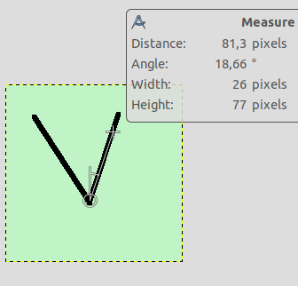
Click on start point and drag following a side of the angle.
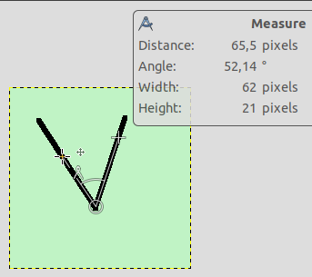
Then, Shift-click on start point and drag following the other side of the angle: you get the value of this particular angle.
Holding down the Ctrl key puts the tool into constrained straight line mode. The orientation of the line is constrained to the nearest multiple of 15 degrees.
Ctrl key pressed and click on an end point creates a horizontal guide. The mouse pointer goes with the icon.
In Horizontal or Vertical Orientation modes, Ctrl also toggles between Horizontal and Vertical.
Alt key and click on an end point creates a vertical guide.
This key combination and click on a measure line allows to move the measure.
Ctrl+Alt key combination and click on an end point creates a vertical and a horizontal guides.
Normally, tool options are displayed in a window attached under the Toolbox as soon as you activate a tool. If they are not, you can access them from the main menu through → → which opens the option window of the selected tool. The available tool options can also be accessed by double clicking the corresponding tool icon in the Toolbox.
In the Auto mode (default), will snap to the smallest angle between the measure line and the vertical or horizontal direction. Horizontal and Vertical allow to override this behavior by specifying explicitly what it should be.
This option will display an Info Window dialog that details the measure tool results. The results are more complete than on the status bar.
Transform, Interpolation, and Clipping are treated in Section 4.1.1, “Options”. Here is an example for straightening a path:
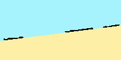
Original image
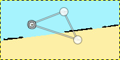
Draw path
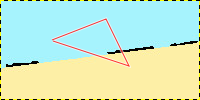
Make path visible
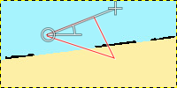
Draw measure line on the segment you want to straighten
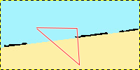
Straighten
Figure 14.143. “Straighten” clipping options
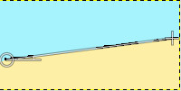
Draw measure line
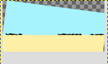
Straighten with “Adjust” option
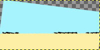
Straighten with “Clip” option
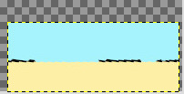
Straighten with “Crop to result” option
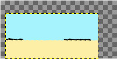
Straighten with “Crop with aspect” option
: click on this button to perform straightening.
You can't measure surfaces directly, but you can use the Histogram that gives you the number of pixels in a selection.